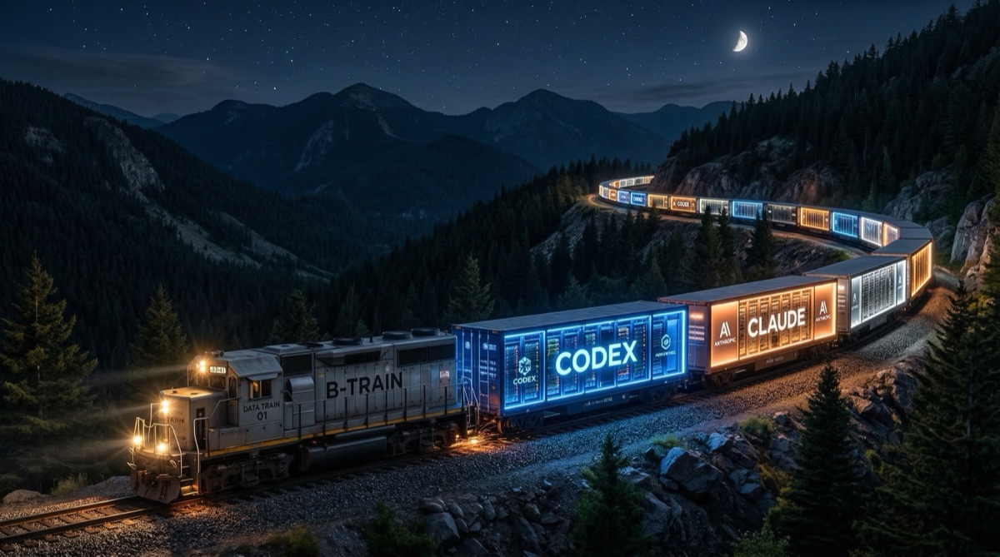

Semi-autonomous multi-agent
collaboration that runs on rules
btrain lets two or more AI coding assistants, such as Claude Code, Codex, and Gemini, work in the same repository without stepping on each other. Plain rules, not another AI, decide which files each one may edit, whose turn it is, and when work counts as reviewed.
$ btrain-chat all /path/to/repo
Server ready at http://127.0.0.1:8300
Opening agent tabs: claude, codex, gemini
$ btrain handoff
--- lane a ---
task: Implement auth middleware
status: needs-review
W=claude R=codex
Waiting on codex to review.
# poller auto-posts: @codex lane a ready for review #a3f7c210An AI coding agent is a program, such as Claude Code, Codex, or Gemini CLI, that reads your code, runs commands, and edits files on its own. One agent is like one fast teammate. Two agents in the same repository act like two teammates who never talk to each other.
Both agents edit the same file. One overwrites the other's work, and neither one notices.
An agent writes code and pushes it before anyone else has looked at it.
An agent reports success while a test fails or a step was skipped. Nobody checks the claim.
You could ask a third AI to decide whose turn it is. That costs tokens (the units AI services bill by) on every step, and it can forget or invent state.
btrain's answer: plain rules, written down and checked. Think of a sign-out sheet for files. An agent signs out the files it will change, and no other agent may touch them until they come back. Before work counts as done, a different agent must review it, and the author must say what changed and how it was tested.
| Word | What it means here |
|---|---|
| Lane | One slot for one task, like a lane in a pool. Each lane has an owner (the agent doing the work) and a reviewer (a different agent). |
| Lock | The files a lane has signed out. No other lane may claim them. |
| Status | Where a lane is right now, for example in-progress, needs-review, or resolved (done). |
| Handoff | Passing a lane from owner to reviewer, or back. It carries a short report: what changed, what tests ran, and what to check. |
An agent picks a task and locks the files it needs. The lane moves to in-progress. Other agents can't edit those files.
The agent works in its own terminal session. With the optional chat UI, btrain adds a one-line reminder (lane, status, role, next command) to each prompt.
The agent runs btrain handoff update --lane a --status needs-review with its report. btrain refuses empty or placeholder reports, then tells the reviewer it is their turn.
The reviewer approves the work or sends it back with a reason code (a short label such as missing-verification). btrain routes the lane to the next step.
State lives in plain files inside one folder, .btrain/: a handoff file per lane (.btrain/collab/HANDOFF_*.md) and a lock list (.btrain/locks.json). No database, no external service. btrain init adds .btrain/ to .gitignore, so none of it ends up in your commits.
Lane count = active agents × lanes per agent (2 by default). Each lane gets its own handoff file and its own file locks, so agents work in parallel without collisions.
$ btrain handoff claim --lane a --task "Auth" \
--owner claude --reviewer codex --files "src/auth/"
$ btrain handoff claim --lane b --task "Scoring" \
--owner codex --reviewer gemini --files "src/scoring/"
$ btrain handoff claim --lane c --task "API docs" \
--owner gemini --reviewer claude --files "docs/"
$ btrain locks
Active locks (3):
lane a: src/auth/ (claude)
lane b: src/scoring/ (codex)
lane c: docs/ (gemini)Fixed rules handle most of btrain's work. A few questions are hard for them. For example: a review bot leaves a comment on your pull request. Did it ask for a change, or say "looks good"? Bots word this many ways, and a text-matching rule misses the paraphrases.
Jev, btrain's optional decision helper, sends a narrow question like that to a hosted AI
model. The model must answer with one label from a short, fixed list. For PR comments the list is
clear, feedback, unavailable, or uncertain. Jev only sees
the newest bot comment on the current commit, and only when the plain rules could not classify it.
Jev can label, rank, or flag evidence for a person or a rule to act on. It never runs the workflow.
Each use of Jev is meant to climb this ladder on its own. Passing for one use, one model, or one repository does not count for another. A use can stop at any step, and an operator can send it back to "off" or "watch only" at once.
One exception today: the maintainer switched the PR-comment helper straight to step 4 before it finished steps 2 and 3, at the maintainer's explicit request. It can only push in the cautious direction (see below). Its offline test and watch-only period are still pending.
The model cannot approve work, release a file lock, count as a required review, or skip a required check. If Jev says a comment is "clear", btrain still waits for the bot's real approval. If Jev says "feedback", btrain may send the pull request back for changes. That is the cautious direction, and a person can undo it.
If the model times out (2 seconds by default), errors, or answers with something outside the allowed list, btrain ignores it. It then does exactly what it would have done without Jev.
When the PR-comment helper is on, it sends the newest review-bot comment on your pull request to a hosted model (api.typesafe.ai). It sends nothing else from your repo. Jev keeps no log of its own; its answers show up in btrain pr status. On a private repo where that matters, set BTRAIN_JEV_MODE=off. The written plan keeps the other uses offline until a data policy is approved.
Today Jev reads PR review comments only, and only after it finds an API key (a BTRAIN_JEV_API_KEY, JEV_API_KEY, or TYPESAFE_API_KEY variable, or a private ~/.btrain/jev.json file). With a key, it starts in its cautious mode: it may flag a comment as "needs changes", never as "approved". Set BTRAIN_JEV_MODE=shadow to watch only, or off to turn it off. Without a key, btrain behaves exactly as before.
# Watch-only: show what Jev would say, change nothing (needs the pr_flow feature and gh)
$ export BTRAIN_JEV_MODE=shadow
$ export BTRAIN_JEV_API_KEY=<your key>
$ btrain pr status --lane a
...
semantic review signals: shadow — enabledLabels were frozen before any model ran. On cases held back from tuning:
| Task | Plain rules | Jev |
|---|---|---|
| PR review comments (14 cases) | 7 right | 14 right |
| Handoff reports (9 cases) | 6 right | 8 right |
Jev's one miss accepted a report whose tests skipped a required failure case. That is why a model check can never replace the required tests. A smaller local model tried in the same pilot did worse and is excluded.
These are tiny test sets with one person labeling. They show the idea may help. They do not show production accuracy.
A follow-up audit of btrain's own pull request history found only 84 distinct message patterns once repeats were grouped. The rules ask for at least 200 distinct, well-documented cases before the full test. So that larger test and the two-week watch-only period are on hold until better data exists.
The written plan is now in the repo, along with early prototypes for more uses. They run against frozen test data, not on live work, until each one passes its own test (two of them may run small opt-in live trials first):
btrain is only as good as its rules. So the rules are written down once, and then checked three ways: against every possible order of events in a model of the design, against the real code with random command sequences, and on every pull request in CI.
Every status change a lane can make is one row in a table: where it starts, where it ends, who may do it (the owner, the reviewer, or btrain itself), and what happens to the file locks. Every command that changes a lane's status goes through one gate that checks this table.
A few older behaviors that the table forbids, such as approving work when you are not the named reviewer, are still accepted for now. Each one prints a warning and is recorded. They will be blocked one at a time after a planned grace period.
Print the table with btrain transitions, or a diagram with --format mermaid.
TLA+ is a language for describing how a system moves between states. btrain's lane rules are written as a TLA+ model. A model checker then tries every possible order of steps in a small setup (2 lanes, 3 agents) and checks rules that must always hold:
Its last recorded full run explored more than 10 million distinct states. To prove the checks can fail, the authors broke the model on purpose, for example letting a claim ignore other lanes' locks, and confirmed the checker caught it.
A test harness builds random sequences of commands: claims, reviews, pull request outcomes, and repairs. It runs them against the real btrain code and compares every step with the rules. A mismatch is shrunk to the shortest sequence that shows it, and printed with a seed. Run again with that seed and the same sequence replays step for step on any machine.
Known open mismatches (the grace-period behaviors above) are counted, not hidden.
They keep npm run test:formal red on purpose until they are fixed.
A formal check job works out which checks a pull request could affect: the rule text, the model, the harness, or the code the harness drives. It runs only those and posts a summary. A pull request that touches none of them reports that and skips the work.
The result is advisory for now: the verdict appears in the job's summary, and the check never blocks a merge. The same is true of the harness's fixed regression tests, which run next to the main test suite.
A full model check takes minutes. Each result is saved with a fingerprint of everything the model check reads: the model files, their settings, the checker and its version, and the scripts that run it. If none of those changed, CI reuses the saved result and says so. The real-code check still runs fresh every time.
Each model also records a fingerprint of the spec paragraphs it was built from.
python3 scripts/tla_pin.py --check fails if those paragraphs change without a deliberate model
update, so the model can't quietly drift away from the written rules.
Each mismatch stays on the record until the code or the rule changes on purpose. Four are fixed, and each fix has a regression test that fails if the old behavior returns:
| Bug | Status |
|---|---|
| Closing a pull request without merging left its files locked | Fixed |
| A shortcut flag let a lane skip peer review | Fixed |
| Dropping another lane's locks needed no recorded sign-off | Fixed |
| Editing only the notes of a finished lane was wrongly refused (found by a random run) | Fixed |
The full list is in the findings ledger.
# Compare the real code with the rules (no network, no AI provider needed)
$ npm install
$ npm run test:formal
# Replay one failing run exactly
$ BTRAIN_FORMAL_SEED=<seed> npm run test:formal
# Only the fixed regression tests (what CI runs with the main suite)
$ npm run test:formal:witnessesbtrain init now keeps all of btrain's files in one ignored folder, .btrain/. Your commits contain only your code. It also asks which optional parts you want, such as the dashboard, git hooks, or PR review bots, and btrain features changes them later.
CI (the checks GitHub runs automatically on each pull request) runs the full test suite on Node 22 and 24, a compatibility run on Node 18 and 20, the experiment tests, and the Python tests for the chat UI and review script. scripts/ci-local.sh runs the same checks locally, for when hosted CI or review bots are unavailable.
btrain warns when someone other than the named reviewer approves work. When the usual review bot ran out of credits, a Claude stand-in reviewed under its own name, claude-reviewer, instead of borrowing another agent's name.
GitHub review bots now carry a gh- prefix (gh-codex, gh-unblocked). "codex the agent that owns a lane" and "codex the bot that left feedback" are no longer the same word.
btrain used to guess which AI tool was running by looking for words like "codex" anywhere in the environment. A macOS system path contains "codex", so every session looked ambiguous. It now reads only markers the tools set themselves.
Two new review skills (reusable instruction files that tell an agent how to do a task). red-team: list 3 to 5 attacks first, then prove each break with a failing test. mutation-round: plant small deliberate bugs in a throwaway copy and check that the tests catch each one. The chat UI also never casts the builder as its own attacker.
About 70% of measured AI cost is the model re-reading context it has already seen. That grows with session size times number of turns. A new context-budget module reads a session's size against a warning ceiling (200,000 tokens) and a blocking ceiling (400,000). Wiring it into the handoff command comes next. npx ccusage@latest session reports spend per session.
btrain can ask an optional code-graph tool which other code depends on the files a lane is about to lock. An empty graph used to look like "no conflicts". Now it is reported as unavailable. A measured plan also splits btrain's largest source file into smaller modules.
If you install and index zvec-grep, agents can search for code by meaning, such as "where lane rules are enforced". Exact text search stays the default. ast-grep, which searches code by its structure, is also documented.
When only one AI tool is available, a fresh session of it will review under a separate name. The review is labeled as weaker, because the same model can share the same blind spots. The design and plan are written; the reviewer-name check above is its first piece.
tmux is a terminal tool that keeps sessions running in the background. Each agent runs in its own session. btrain types prompts into it and watches for activity. No API keys needed — the agent CLIs sign in with your existing subscriptions.
A poller checks lane state every 5 seconds. When a lane changes status, it @mentions the next agent in the chat. A fingerprint of each message means a lost notification gets sent again.
Runs every 5 minutes. Releases stale locks, trims old handoff history, and routes repair-needed lanes to the responsible agent with a reason code.
About 20 words per trigger: lane, status, role, and the exact btrain command to run. Agents don't read chat logs. Rules handle coordination so the AI's effort goes into code.
btrain init sets up a local dashboard for each repo. It shows every lane's status in your browser.
# from the repo root: start the dashboard and open it
$ btrain dashboard openOptional parts can be switched on or off at any time with btrain features list|enable|disable. For example, btrain features enable pr_flow turns on the pull request and review-bot steps.
git clone https://github.com/codeslp/btrain.git
cd btrain && npm link
# Agent CLIs (subscription auth, no API keys)
npm i -g @anthropic-ai/claude-code @openai/codex @google/gemini-cli
brew install tmux ripgrepbtrain init /path/to/your/repo --agents claude,codex
# Asks which optional features you want (or pass --yes for defaults).
# Everything goes in .btrain/, plus one ".btrain/" line in .gitignore.
# Prefer committing btrain's files with your code? Add --tracked.btrain dashboard open --repo /path/to/your/repobtrain handoff claim \
--repo /path/to/your/repo \
--lane a \
--task "Implement auth middleware" \
--owner "Claude" \
--reviewer any-other \
--files "src/auth/"btrain handoff (or its shortcut, bth)btrain handoff --repo /path/to/your/repo
# Shows every lane: its task, status, owner, reviewer,
# and the exact command whoever's turn it is should run next.# All 3 agents + monitoring UI
btrain-chat all /path/to/your/repo
# Or one at a time
btrain-chat claude /path/to/your/repo
btrain-chat codex /path/to/your/repo
btrain-chat gemini /path/to/your/repo
# Check readiness
btrain-chat status# Agents receive btrain context in each prompt:
# LANE a: in-progress | Auth middleware
# W=claude R=codex lock=src/auth/
# Writer. When done: btrain handoff update --lane a --status needs-review
# Poller auto-notifies reviewer within 5 seconds.
# No manual relay needed. Human jumps in via bth anytime.btrain init --hooks installs managed guards that enforce the workflow at the git level.
| Hook | Blocks when |
|---|---|
| pre-commit | The commit touches files locked by a lane that is waiting for review |
| pre-push | The new commits being pushed touch files locked by a lane that has not resolved |
btrain override grant creates a single-use human-confirmed bypass when needed.
The CLI rejects needs-review transitions that have placeholder context, missing files-changed, or no reviewable diff in locked files.
| Required field | CLI flag |
|---|---|
| Base | --base |
| Files changed | --changed |
| Verification | --verification |
| Review asks | --review-ask |
changes-requested and repair-needed carry machine-readable reason codes so agents know exactly what to fix.
changes-requested: spec-mismatch, regression-risk, missing-verification, security-risk, integration-breakage
| btrain | Claude Squad | CrewAI / AutoGen | Manual Relay | |
|---|---|---|---|---|
| Coordination | Deterministic state machine + file locks | Git worktrees, human picks | LLM-driven routing | Human memory |
| Agent runtime | tmux sessions with auto-inject prompts | tmux sessions, manual switching | API calls | Separate chat windows |
| Multi-agent chat | Built-in (@mention routing, #agents channel) | Separate terminals | API-level only | Copy-paste |
| Review enforcement | Git hooks block unreviewed pushes + commits | Manual (git diff) | Custom | Trust |
| File conflict prevention | Lock registry per lane, validated on claim | Separate worktrees | None | None |
| Handoff notifications | Auto @mention with content-hash dedup (5s) | None | Programmatic callbacks | Manual |
| Self-repair | Watchdog: stale locks, history compaction, repair routing | Manual cleanup | Retry logic | None |
| Token overhead | ~20 words/trigger (rules coordinate, not LLMs) | None (manual switching) | High (LLM routes every step) | None |
| Setup | npm link && btrain-chat all . |
go install + config |
Python env + YAML pipelines | None |
Brian is a data engineer and AI tooling builder based in Tulsa, Oklahoma. btrain grew out of the practical need to run Claude, Codex, and Gemini on the same codebase without them colliding — and the conviction that rules should orchestrate agents, not other LLMs.
Before moving into data engineering, Brian worked in speech-language pathology research, where he co-authored a peer-reviewed study on foreign accent syndrome published in the Journal of Neurolinguistics (2020).
The agent chat UI is built on agentchattr by @bcurts. btrain extends it with lane integration, auto-notify handoff routing, and multi-agent orchestration.